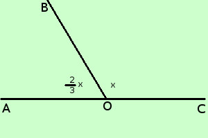

|
soluzione Risolvere il seguente problema Due angoli adiacenti sono l'uno i 2/3 dell'altro; determinare le loro ampiezze ipotesi: gli angoli sono adiacenti, cioe' la loro somma e' un angolo piatto (180°) tesi: trovarne le misure ampiezza del secondo angolo = x 
3x + 2x = 540° 5x = 540° x = 108 deg; ampiezza del secondo angolo = x = 108° ampiezza del primo angolo = 2/3 x = 2/3 ·108° = 72° |